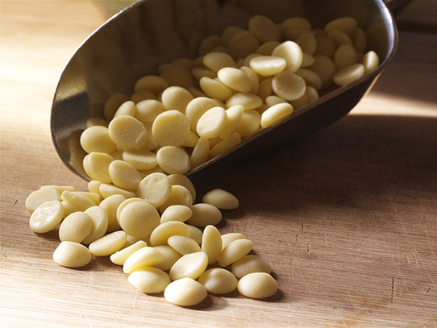
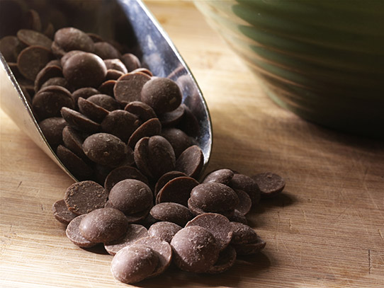

TYPES OF CHOCOLATE
CHOCOLATE LIQUOR
Chocolate liquor, sometimes referred to as unsweetened chocolate, is the base of all types of chocolate. This thick, dark brown paste is created from cacao nibs, the inside of the cocoa bean. The nibs are finely ground to a smooth texture. When heated, this paste turns to a liquid that can be formed into bars or chips. Chocolate liquor is 100% cocoa, with no added ingredients. Under high pressure, this paste separates into cocoa butter and cocoa powder (also called cocoa solids). Despite the name, chocolate liquor does not actually contain alcohol.
WHITE CHOCOLATE

chocolate is easy to identify because of its cream or ivory color. It is made by combining sugar, cocoa butter, milk, vanilla, and lecithin (an emulsifier that helps the ingredients blend together). These ingredients give white chocolate its sweet vanilla aroma. White chocolate often has a flavor profile that can be described as predominately sweet, with bold notes of sweetened condensed milk and vanilla. Good quality white chocolate will have a rich, soft, and creamy texture — a characteristic that comes from its cocoa butter base and high sugar and milk content.
MILK CHOCOLATE

Milk chocolate is a classic that we all know and love from childhood. With its light brown color, creamy texture, and sweet flavor, milk chocolate is widely regarded as the most popular type of chocolate. It is made by combining chocolate liquor (cocoa solids and cocoa butter) with sugar, and milk. Sometimes an emulsifier, such as soy lecithin, is added to enhance its smoothness. According to the FDA definition, milk chocolate must contain at least 10% chocolate liquor and 12% milk.
DARK CHOCOLATE

Dark chocolate, with its notable deep brown color, is the second most popular type of chocolate. It is sometimes referred to as black or semisweet chocolate and is noticeably less sweet than milk chocolate. In recent years, dark chocolate has surged in popularity thanks to a number of articles being published about the health benefits.
BITTERSWEET CHOCOLATE

Bittersweet chocolate has gained a lot of traction recently as people started to learn more about cacao and cocoa percentages. This kind of chocolate, sometimes referred to as extra-dark chocolate, rose to popularity when people began claiming that you should eat dark chocolate with a cocoa content of 70% or more, in order to get the most health benefits. The recent rise in bean-to-bar chocolate makers and craft chocolate has also lead to an increase in awareness and popularity of higher cocoa content dark chocolate.
COCOA CHOCOLATE

Cocoa powder is created when chocolate liquor is separated under high pressure, and the resulting cocoa solids are crushed into a powder. Unsweetened cocoa powder is essentially 100% cocoa. There are two types of cocoa powder, natural cocoa and dutch-processed cocoa. Natural cocoa is lighter brown in color and has a strong chocolate flavor that is often acidic. Dutch cocoa is natural cocoa that has been alkalized to neutralize the acidity. The dutch-process gives the cocoa powder a deep, warm color and slightly milder flavor.